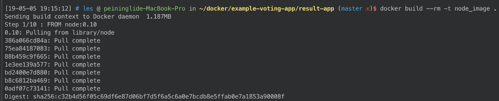
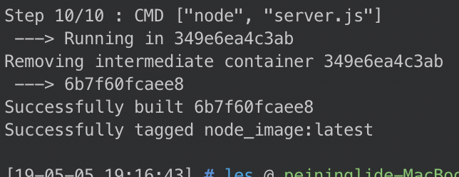
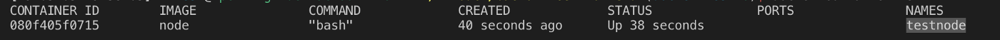

# Docker 學習筆記 (三) — Docker 指令講解
# Docker 的問世，翻轉了人們對用環境部署與開發的習慣，學會 Docker 絕對是一項不虧本的投資

在上一篇我們講完了 安裝 Docker 。
本篇要來講講 Docker 指令的使用。
Docker 的操作分成兩大部分：Image 與 Container。因此我們也將以這兩者分類講解。
在安裝好 Docker 後，我們可以使用 docker -h 查看 docker 擁有的所有指令
然而 docker 可以執行的功能甚多，許多 command 本身也擁有一套完整個 command。
因此在這邊我們只對較常使用到的指令講解。
# Image
- 列出目前本機所擁有的 Images。
docker images / docker image ls
我們也可以只列出每個 Image 的 Image ID，使用
docker images -q / docker image ls -q
- 搜尋想要的 Image (從 Docker Hub)
docker search <keyword>
例如我們若想要搜尋有關 Node 的 Image ，我們就可以這樣使用。

- 獲取 Image (從 Docker Hub)
docker pull <image name> / docker image pull <image name>
- 從 Dockerfile 建立 Image
我們也可以自製 Image。藉由撰寫 Dockerfile 我們可以製作自己的 Image。
Dockerfile 是一份以 YMAL 語言描述的 Docker 設定檔，Docker 會依照目錄中的 「Dockerfile」檔名的文字檔中的描述，進行 Image 的創建。
至於 Dockerfile 的撰寫，我們會在之後的文章講述。
docker build [--rm] [-t/--tag <tag name>] [--network <network name>]
我們使用以下這份 Dockerfile 為例：
使用 docker build 創建自己的 Image
docker build --rm -t node_image
以上指令表示，我請求 Docker 創立一個 Image ，Tag 名稱為 node_image 並且於創立完成後，將創立此 Image 期間 產生的中間 image 通通 remove (-rm) 掉 。


完成後，我們使用 docker images 檢查看看是否有創建了。
- 從 Container 中建立新的 Image
有些時候，我們在 Container 中有了新的更動，需要以此創建新的 Image 。
此時我們可以使用 docker image commit 來創立
docker image commit <container name> <new image name>
假設我們現在已經有一個正在執行的 Container： testnode

我們從此 Container testnode 中創建一個新的 Image 叫做 new_testnode_img
之後使用 docker images 確認是否生出 image 了。
docker image commit testnode new_testnode_img

- 刪除 Image
使用 docker rmi <image name> 刪除指定的 image。
docker rmi <image name> / docker image rm <image name>
以剛剛產生的 new_testnode_img 為例，我們可以使用此指令刪除此 image
docker image rm new_testnode_img
# Container
- 使用 Image 執行 Container
建立 Image 的目的就是要使用來執行 Container 。
建立 Container 使用 docker run <image name> 可以建立一個 container。然而單純只使用這樣的指令是不夠的。我們通常會給予各種 arguments 來配置啟動的 container 。
常見的有：
- -d : 背景執行
- -h : 自訂 host name
- -i : 進入互動模式
- -p : 設定要對外開啟的 port 號 mapping
- -u : 設定 username
- — name : 自訂 docker container 的名稱
- -v : 設定從外部掛載資源到 container 中。
以下面指令為例，我們開啟一個 node 的 container
此指令的意思為：使用 node 開啟一個名為 testnode 的 container ( —-name testnode )；對外開放 8080 port，並且對應到宿主電腦的 8080 port ( -p 8080:8080 )；背景執行 ( -d )；並且於啟動 container 後執行 /bin/bash ( -it /bin/bash )。
- 查看 Docker Container 線程
我們可以使用 docker ps 查看現在 正在執行 的 container 線程，以剛剛的 container 為例：
docker ps / docker container ps
若想要查看所有的 container 請加上 -a
docker ps -a
- 查看 Docker container 中的 Logs
我們可以使用 docker logs 查看 container 執行的紀錄
docker container logs <container name> / docker logs <container name>
# 診斷
有些時候，我們需要更深入的了解 Docker 中的 Image、Container、或是其他配置的細節，此時有一個指令 — inspect — 可以幫助我們更加了解這些 Docker 部件。
docker inspect <image/container...etc>
例如以下例子便是使用 docker inspect 查看某一個 container 所得到的 json 資訊。

我們可以從中查看 網路設定 (NetworkSettings)、Container Config 或是更多細部細節。
# 以 Container 執行指令
許多時候，我們希望能夠對 Container 進行操作。可能是進入到 Container ；也可能是希望讓 Container 執行其他命令，此時我們可以使用以下指令。
例如，我常常使用此指令進入到 Container 中察看 Container 的內容。
docker exec [-t -i -d] <container name> <command> [ARGV, ...]
- -t：分配一個 Sudo 的 Terminal
- -i ：即使沒有 process attach 也要保持 STDIN 開啟
- -d：背景執行
此三個 OPTIONS 可以分開使用，也可以合併使用。
上圖的例子便是，使用 docker exec -it 調用 bash 進入 Container 內部查看目錄。
# 結語
Docker 還有許多細部功能，例如匯出 \ 匯入 Image、Docker 虛擬硬體配置、發佈自己的 Docker Image 到 dockerHub 上… 等等。
功能舉繁不及備載，等到需要時再查詢即可。
Docker 所帶來的便捷是顯而易見的，至此，我們算是將 Docker 的基礎用法都提及了一遍。接下來就是靠實作累積實力與經驗了。